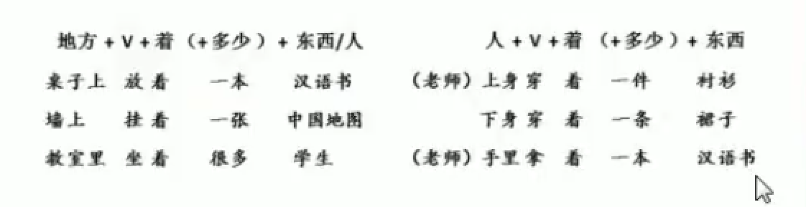
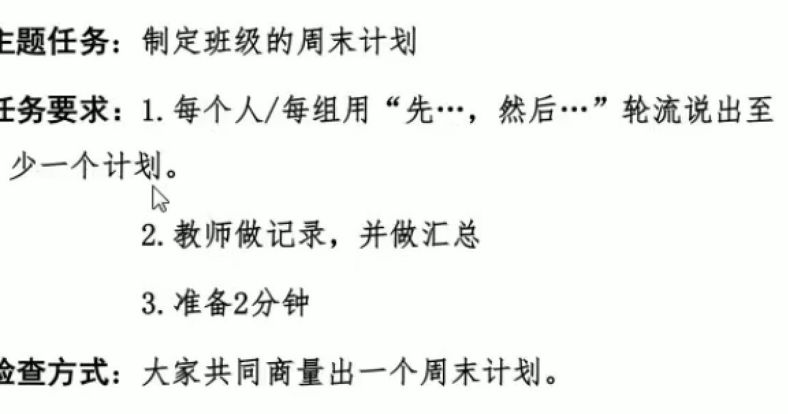

同学们好！明天我们班会有一个很可爱的学生要来听课，你们想不想知道他是谁呢？好，我听到很多同学说想。那我们一起猜一猜他是哪国人呢？老师听到有同学说是韩国人、也有的说是日本人。嗯他有可能是韩国人有可能是日本人，那么大家可以这样问老师呢——他是韩国人还是日本人？来一起说一遍，（重复）很好。注意这个词，“还是”（板书）。他来了我们要请他喝咖啡、茶、矿泉水，他会喜欢喝什么？你们可以怎么问老师：他喜欢喝咖啡还是喝茶？大家很聪明，老师会告诉你们，他喜欢喝咖啡。有同学说他什么时候来呀？那就可以问：他上午来还是下午来呢？非常好，他上午来。我们明天一起来期待他的到来。
刚才我们一直用到了一个句子，老师写在黑板上——A还是B（呢）？当我们要在两个或多个内容中询问要选择哪一个的时候，我们就可以使用这个问句了。
我们看看黑板上的三组图片，大家尝试用这个句式造句，向老师提问吧。第一组图片分别是学校操场和教学楼，如果你正在打电话找我，不知道我在哪里，你会怎么问我？请李明来说，哦对，老师你在操场还是在教学楼？问得非常清晰，你在操场还是在教学楼，老师会回答你，我在教学楼。就是这样，大家继续用下面两组图片向老师提问。
杰克尔来试一下，哦你问老师：你上班是坐公交车还是坐地铁？诶很好，来大家一起说（复述）老师回答你们，我是坐地铁上班。还有一幅图片，好，麦克白问老师：你喜欢上午还是下午？老师喜欢上午。图片上是两个时钟，还有没有其他问法？我听到陈汉典问我：你的课是十点的还是三点的？非常好，你们想知道是几点上课的，就可以问（复述）。
很好，大家还有其他问题要问老师吗？好，暂时没有啦。
老师觉得，大家已经能准确地使用“还是”句来提问了，现在我们试试提问我们的同学，然后大家相互回答。黑板上有五组词语，大家可以自由选择造句。
欧那和玛丽很快举手了，我们请他们来演示一下。哦他们选择了教室和宿舍，看看他们会怎么造句。嗯，好的。欧那问玛丽，你喜欢在教室学习还是在宿舍学习？很好，接下来请麦克来问李中文，诶，同学们听到麦克问了什么？诶对，平常你喜欢打球还是跑步？李中文中他喜欢跑步。我们一起来问班上的小帅哥马克喜欢什么样的女生呀？我们可以怎么问？诶对，你喜欢长头发的女生还是短头发的女生？
刚才好几组同学都相互提问了是A还是B，很多同学已经能把这个句式用到日常对话中了。现在我们可以全班来玩个猜东西的游戏啦。讲台上有好多东西，有电脑、手机、中国结、筷子、铅笔、书包。我们请五位同学来讲台上挑选一个喜欢的东西，然后不告诉大家。全班同学问他门是A还是B，直到猜中。用时间最短的，就可以带走自己喜欢的东西。
老师来做个示范，好，我在心里想好了自己想要的东西，你们可以问老师：是电脑还是手机？都不是。是铅笔还是书包？都不是。是筷子还是中国结？啊是筷子。那么你们就猜中了。好我请奥莱多和马克等几位同学来选，大家一起来问。好啦，这个游戏结束了，那最后马克用的时间最短，老师把他喜欢的铅笔送给他。
我们回顾一下今天的是A 还是B句，可以用来猜测是哪一个。大家回家之后可以用今天学到的句子去问自己的爸爸妈妈。好的，下课。
同学们好。上课前我们看了一个小短片，《玛丽的周末》。现在大家可以告诉老师，玛丽在周末都做了些什么事呢？好，麦克反应很快，说她在看电视还有听音乐（板书：看 听），好我们可以说周末玛丽会看看电视、听听音乐。还有吗？哦李斯特说她还学习了，猜猜还可以怎么说？对，学习学习。到晚上，玛丽累了，她靠在沙发上干嘛？诶很好，休息休息。
如果这是玛丽上一周的安排，过去的事情，我们加个“了”，可以这样说：她看了看电视、她听了听音乐，她学习了学习，休息了休息。
如果是玛丽正要做的事情，我们可以加个“一”字，说成：看一看、听一听。但是，我们不能说“学习一学习”。有没有同学发现了规律？非常好，麦克白说一个字的动词可以加，两个字的动词就不能加啦！
大家告诉老师，玛丽的周末过得轻松吗？非常轻松。所以，在口语中表示很轻松的事情事，我们可以用重叠动词的表达。就像1+1一样，我们来看（板书）：AA/A了A/ABAB/AB了AB/A一A。
同学们看看课文，课文里出现了英男，他去买手机。我们一起找一找重叠的用法。好，老师提问题，大家用课文里的句子回答我。好汉克来试一下，英男买手机时想了解一下手机，他怎么问呀？您可以给我介绍介绍吗？售货员怎么说？您看看这个牌子。……我们去买东西，不是自己做轻松的事情，那为什么要这样重叠地说呢？诶对了，这样说更有礼貌，语气更加温和。这就是我们今天的语法，一般用在什么时候呀？好，大家要记住，一般用在口语当中！
我们来看一个填词练习，请大家看黑板。明天你最好________。后面有一个词语，收拾，诶是整理的意思。我们可以怎么说？请马克来说：明天你最好收拾收拾房间。第二题，要用到的词是复习，杰克你会怎么填？这篇课文我再复习一复习。杰克不小心犯了一个小错误，谁来帮他纠正一下？诶很好，两个字词语重叠，中间不能加“一”，那么我们可以说——这篇课文我再复习复习。
（昨天回家以后，我们商量商量。去年暑假我去海南玩了玩。）
我们可以用这种句式来多造几个句子，一起帮老师安排一下这个周末可以做哪些事情。看黑板上第一行都是动词，有哪些，大家一起跟老师念：打、喝、玩、复习、洗、活动、打扫、参观。下面一行是名词，有哪些，大家帮我念出来：作业、球、房间、电脑、茶、衣服、博物馆。大家觉得老师可以做哪些事情呢？一人说三句话，好李中文来说。我可以喝喝茶、打扫打扫房间、复习复习作业。哈哈好，老师不用复习作业，你还可以说，老师去参观参观博物馆。嗯，几位同学都说得非常好。
大家看黑板上这张图片，我们一起来向自己的同学借东西。图片上有好多东西呀，男生有世界地图、雨伞、书包、自行车等等，女生有书本、笔盒、口红等等。好我先请一位同学来和老师配合，有请麦克。老师指着图上问你：我可以穿穿你的鞋子吗？麦克回答我：不可以，我只有一双鞋。我继续问：我可以借你的自行车骑一骑吗？麦克回答：可以，你骑吧！好，老师成功向麦克借到了自行车。现在请麦克来向其他同学提问。好，刚才麦克、伊利、莫拉都问得很好，很有礼貌，回答得也很得体。
好今天我们学习了动词重叠的表达，我们可以用在口语对话中，显得我们很有礼貌，或者表示我们很轻松地做某件事情。
（图片法）同学们好，大家看这是谁的照片？诶对是我们班的集体照。我想问问大家，我们班有多少个男生？好麦克数得快，有6个男生。那有几个女生呢？玛丽说有11个女生，很好。所以我们班男生多还是女生多？女生多。那么同学们可以这样说：我们班的女生比男生多。大家跟老师一起念一遍，很好。大家再看看我们班有几个老师？2个老师，对所以我们可以说：我们班老师比学生少。
我们班女生比男生多几个人呀？麦克算很快，5个。所以我们可以这样说：我们班女生比男生多5个。5个多不多呀，不多，就一点。那我们还能说：我们班女生比男生多一点或者多一些。我们班的老师比学生少多少？15个，奥莱多你觉得15个多吗？多，那我们就不能说少一些，应该说少很多，少得多。
我们发现蓝色字（板书）不能放在多和少的前面，那么这个句式我们就可以归纳成：A比B+adj.+多少（一点、很多、得多）。这个句子可以用在东西的比较上，让别人知道两个东西的不同。
大家来看黑板上的四张图片，我们来说说他们的不同。第一张图片：一个女生1米55，一个男生1米45，我们可以怎么说？麦克来说，大家听到了吗：女生比男生高。高多少？李斯特来说：女生比男生高10厘米。那10厘米多不多？所以我们怎么说？丽娜来说：女生比男生高一点。非常棒。第二张图片，一个是小孩的手很小，一个是爸爸的手很大，那我们可以怎么说，麦克白来说：爸爸的手比小孩的手大。大得多不多？很多。那我们可以怎么说？丽娜来说：爸爸的手比小孩的手大得多。非常棒，剩下的两张图片大家也都说的很好。
老师现在要把A和B的位置换一下，女生比男生高，我们还可以说男生没有女生高。现在我们可以说小孩的手——请麦克来说，诶很好，没有爸爸的手大。我们看这两张图（板书填空句子）：帽子没有衣服便宜。 大卫没有小麦胖。大家都很聪明，轻轻松松就掌握了今天的两个重要句式：A比B+adj.+多少 B没有A+adj
好，大家来看这四个句子。每个同学用今天学的一个句子来转述，如果前一个同学用过了你就要换一种方式哦，准备好了吗？看第一个句子：从学校去植物园，坐公交车方便，坐地铁不方便。大家用比较句怎么说？请艾瑞克说，诶好棒，他说坐公交车比坐地铁方便。请林娜来说，换一个反义词，可以怎么说？坐地铁比坐公交车麻烦一些，很好。斯嘉丽也说说看，对不能再用比了，可以怎么说？坐地铁没有坐公交车方便。这三位同学都完成得很好，给你们一个大大的赞。下面还有三个句子，我们再请同学来造句子。好，大家造句的速度和准确度越来越高了，老师为你们骄傲。
这里有一张表格，老师从网站上截选下来的。上面列出了北京和上海的面积、人口、公园数量、天气、降雨天数。如果你的朋友想要选择一个城市定居，大家可以看着图片来向他描述一下北京和上海的区别吗？
好大家注意过来，马上就是我们学校李老师的生日啦，我们可以一起在课上讨论一下送给他什么生日礼物比较好。三个人一组，每个人说出一个想送的礼物，用比字句比较一下三个礼物，比如说有人想送水果，有人想送鲜花，鲜花比水果更浪漫。最后选出最合适的那个，和我们全班一起来分享。给大家五分钟时间准备。好时间到了，我们请李中文一组来说：奥莱多要送卡片、玛丽要送蛋糕、麦克白要送鲜花。
我们来复习一下今天的比较句，我们可以说：大家现在的中文比以前好得多，以后的中文也会比现在好得多。对，祝大家天天进步。我们今天的课就上到这里，下课。
同学们好，我们一起来看黑板上方框里的两个字。第一个字念什么？很好，京。第二个呢？我看到同学们笑了啊，这个字念不出来呀，像麦克说的，我们没办法看见。没办法看见，我们可以说：看不见右边的字。那左边的字呢？诶很好，我们看得见。（板书）请同学们跟老师一起说：我们看得见左边的字，我么看不见右边的字。很好。
我们还能用“得”和“不”来问老师。可以这样说：你看得见吗？或者你看得见看不见呢？这就是我们今天要学习的语法。当我们要问别人的时候怎么说？玛丽：看得见吗？肯定的回答可以说：看得见；否定的回答就说：看不见。很好。（板书如图）
我们来看黑板上的图片，请同学用刚学的“得”、“不”来提问，大家一起回答。第一张图片上有一个超级大西瓜和一个小孩子。麦克你来问。嗯麦克问得很合理，这个小孩在搬西瓜，他搬得动吗？大家觉得呢？诶不行，那我们就说：他搬不动。第二张图片上有好多美食佳肴，如果就老师一个人吃饭，你可以怎么问。很好，李中文说：老师你吃得完吗？我说：吃不完。第三张图片上有好多好多作业，如果老师明天就要检查，我问你们：做得完吗？大家拼命摇头，那就要大声回答：做不完啊。还有几张图片，大家都问答得很好。
现在我们来看黑板上的几个词组。请同学来连词成句，要求用上我们刚刚学习的：动词+得+结果/动词+不+结果。老师先来做个示范，第一组的三个词大家跟我一起念：一个人、10瓶饮料、喝完。老师就会说：一个人要一口气喝10瓶饮料，他喝得完吗？或者还可以这样说：一个人喝10瓶饮料，他喝不完。老师解释清楚了吗？太好了，那么大家准备一分钟。老师请麦克白来连第二组词：华为P30、欧洲、买到，你会怎么说？很棒，就可以问：华为P30在欧洲买得到吗？买得到。他自问自答，非常正确。还有谁想来挑战一下接下来两组词。大家的表现非常棒，已经可以熟练地使用句子表达了，值得表扬。（晚上9点、睡觉、睡着；不戴眼镜、看清楚）
还记得我们下周约定好要全班同学去春游吗？现在我们用十分钟时间商量一下春游的细节吧。什么时候去、什么地点、吃什么、吃多少、玩什么，请四个同学一组，其中一位同学来安排，再询问其他同学可不可以，最后告诉老师一个最好的方案。比如老师说：下周二早上我们一起去中央公园野餐好吗？玛丽说，下周二不行，我去不了。艾瑞克说中央公园离我们学校很近，大家走路都能到得了。好刚才10分钟大家都提出了很多方案，大家觉得哪个最好？诶，李中文小组的最好，那我们下周就决定去博物馆。
我们一起来复习，今天我们学习了怎么问别人可能的选择，以及怎么回答。请大家课后继续造句，下课。
大家早上好，你们看黑板上这是什么字？有人认识吗？没有。那你们觉得中国人会认识吗？问问老师：你知道吗？哎老师也不知道。说明这个字简单还是难？很难。我们可以说：连老师也不认识这个汉字。连老师都不认识这个汉字。（板书）好大家一起说。
再看1+1=？这个答案每个人都知道，小学生会知道吗？知道，所以它好简单。我们可以说：连小学生都知道是多少。
好，我们一起再说一次：这个字很难，小学生不知道，老师也不知道，我们可以说：连老师都不认识/连老师也没学过。这个算数很简单，连小学生都知道是多少。但是注意，没有否定词的时候，一般不说“连……也……”，很少说。
用“连……也……”我们可以强调也东西太怎么样了，比如太难了、太简单了。
大家一起看下面四个句子，猜猜后面能填什么。这个箱子太重了，一个人提不动，两个人提不动，连几个人都提不动啊？请麦克来造句：很好，他说连10个人都提不动。伊利亚斯刚才说什么：哦，连100个人也搬不动。非常好，你那这箱子得有多重呀！第二个句子，请李中文来试试：那个菜特别辣，连韩国人也觉得很辣。哈哈好，李中文觉得韩国人很会吃辣，所以连韩国人都觉得辣，说明这个菜真的很辣。中国有一个城市，也以吃辣闻名，就是那个吃麻辣火锅的地方，四川。所以中国人会说，这个菜特别辣，连四川人也觉得辣。大家明白了吗？第三个句子，他受伤的事情，很多人知道，连其他学校的人都知道了。第四个句子：昨天她花了很多钱，回来的时候，连十块钱都没有了。连一块钱都没有了。嗯，说更好了。
大家看黑板，听老师问五个问题：一个人特别懒，该怎么说？一个人去过的地方特别少，该怎么说？西安的小吃特别多，怎么说？大卫跳舞跳得特别好，怎么说？玛丽学汉语进步很快，怎么说？请大家用“连……都/也……”句表达，任选三句，可以和同桌讨论着说，三分钟之后我们来分享一下你的造句。玛丽说：一个人特别懒，连房间也不打扫。大卫跳舞跳得特别好，连舞蹈家都夸奖他。玛丽学汉语进步很快，连大学生都赶不上她。很好，下一组，下一组。大家都说的非常好。
我们一起来玩一个游戏，寻找我们班“最特别的人”。每个人都先说自己的一个特点，还是用“连……也/都”来说，下一个人继续想这个特点还能怎么说，想不出来，就新说一个自己的特点。比如，老师第一个说：我最怕热了，连秋天都要开空调。下一位同学可以说：老师最怕热了，连开空调都觉得热。如果想不到，就说自己：我最聪明了，连五年级的功课都会做。大家明白了吗？好，给大家三分钟思考一下。
我们刚才听到了好多特别的人，回家之后大家把这个特别的人写下来，题目就叫《最特别的人》。它不一定是真实的人，可以是虚拟的，大家写得越夸张越好。今天的课就到这里，下课。
同学们你们好，麦克你好，善美你好，安娜你好。田中你好吗？嗯，不说我好，说我很好。请大家跟我读，教室、教室，麦克读：教室，田忠读：教室。我们看图片，这个教室大吗？我问大家，教室大吗？我们回答：教室很大。大家一起来：教室很大。（板书）
中国大吗？中国很大。大家跟老师读：中国大吗？中国很大。（三遍）老师A，大家B。忙，大家跟我读。你忙吗？我很忙。麦克，你忙吗？安娜，你忙吗？
大家看黑板，老师写出1 2 3，用汉字怎么写？一、二、三。汉语难吗？汉语不难。不，难，汉语不难。大家跟老师念：汉语不难。
看这张图片，教室大吗？不大。你们忙吗？我们不忙。你好吗？我不好。（做哭脸）请大家跟我一起读。（板书：S+很+adj s+不+adj）
老师问大家：田中，日语难吗？麦克，英语难吗？安娜，俄语难吗？同学们，汉语难吗？
操练2: 先填空。麦克A，田中B。安娜A，秀美B。
很好，大家学会了吗？我们下课。
导入：
同学们好，我们开始上课。炎热的夏天到了，我们可以买一些新的T恤。大家看看屏幕上的图片，你喜欢什么样的T恤？麦克说：你想买蓝色的T恤。 罗兰说：你想买粉红色的T恤。哦我听见李中文说，想要那件超大的T恤。好，老师想买绿色的T恤（重复）八个字，我们可以更简单地说：我想买绿色的。六个字，不用说T恤，因为我们大家都知道。
请麦克再说一遍，罗兰呢。好的。
讲解：
我们来看今天的句子，A说……，B说……，也可以说“我想买一件红色的。”因为都知道要买的是短袖。C说：我想买一件长的。（板书：名词+的；形容词+的；介词+的）
现在我来问问大家喜欢什么样的手机？罗拉来说：我喜欢白色的手机。哎我们直接说：我喜欢白色的。麦克：我喜欢黑色的。非常好。除了颜色，我们还可以说形状、品牌，怎么说？玛丽：哦你喜欢华为的。安娜说：喜欢大屏幕的手机。// 右边还有好多汽车的图片，大家告诉老师，你喜欢什么样的汽车？秀美喜欢什么样的汽车？哦你喜欢红色的。（再连续问3个）
大家看这两个图片，左边好多美食啊，这是饭馆儿的菜。后边这个大家很熟悉，用餐盘装着，是食堂的菜。老师问大家：饭馆儿的菜好吃还是食堂的菜好吃？食堂的菜好吃。可以，还可以怎么说？食堂的便宜，非常好。刚才听到有同学说菜的便宜，去掉了食堂，这对吗？不对。问的是菜，哪儿的菜？食堂的菜，我们知道是问菜，不是问食堂的水，食堂的环境，所以省略的是菜。// 好老师再问：食堂的菜好吃还是饭馆儿的菜好吃？请李明回答：饭馆的好吃。
今天下课，我们可以去逛街买东西。比如说你想买个书包，到了店里，售货员很热情，问你：请问您需要什么样子的包？大家怎么回答？琳娜说，哦一口气说了两个要求，大家一起说：他需要大一点的、蓝色的。售货员听到了，应该会给你推荐图上的这个包。李中文你呢？好，你喜欢黑色的、双肩的。那么图上这个就是你需要的。（再问2位）请麦克来当售货员，维纳斯当顾客，我们听麦克怎么问？你需要什么样的？这样问行吗？不行，可以说“什么样的自行车？”维纳斯可以回答：想要低一点的。对了，大家明白了吗？很好。
下课之前我们玩一个“拿回我手机”的游戏。请十位同学现在先把手机放在讲台桌上，每个同学用黑板上的句子来描述你的手机，大家猜出来了，他就能拿回去。如果说得不对，就要一直说啦。（模拟三位）
同学们好，我们开始上课。你们看老师手上拿着什么呀？对，一个礼物。老师要送给谁呢？送给麦克，因为今天是麦克的生日。所以老师要送麦克一个礼物。麦克很高兴，不用谢。同学们，还记得老师刚才在做什么？老师送礼物，送谁礼物，对，老师送麦克一个礼物。（板书）
好，我们记住这个句子：谁+送/借/给+谁+东西
麦克你想看看是什么礼物吗？可以打开，嗯，老师送麦克一本书。我们看图片上，男生给女生也送了个礼物，大家猜猜盒子里是什么？（板书）大卫你来猜，一个音乐盒，完整句子可以说：男生送女生一个音乐盒。希拉里你来说：男生送女生一个玩具，很好。大家以后给朋友送礼物，可以说：我送给你一个礼物。（板书）
我们看黑板，今天是玛丽的生日，他的家人准备送给她礼物，我们看看大家想送什么。请大家跟我一起念这些单词：爸爸、一辆自行车、妈妈、一瓶香水、哥哥、一张CD、姐姐、一支笔。我请四个小组的同学告诉大家，谁送玛丽什么东西？ 第一小组齐声说：爸爸送玛丽一辆自行车。非常好。第二小组说：妈妈送玛丽一瓶香水……
大家看黑板上的图片，他们在干嘛？我们用这个句子：马克借给大卫100块钱。老师刚才上课前想买杯咖啡，但是没有零钱，谁有10块钱？哦安娜有十块钱，安娜你可以借给老师十块钱吗？可以，那么安娜借给老师10块钱。谢谢安娜，我下课有咖啡喝了。现在大家懂得如何向自己的好朋友借东西吗？想想老师刚才怎么说？一起来：安娜你可以借我10块钱吗？很好，麦克，你想向李中文借什么？他说：你能借我一本汉语书吗？大家一起说：李中文借谁什么？借马克一本中文书。非常好。好，中文你找俊熙借东西，大家一起说：俊熙借中文一支笔。（操练2遍）（板书）
我们在课堂上一起写下惊喜卡，给家人一个惊喜。老师发卡片，大家先想一想准备送给谁什么东西，然后再写到卡片上。我们问问李佳：你想送谁什么？想送给妈妈一束鲜花。想送给哥哥一个模型。……维尼说自己没有零花钱，没办法买东西，怎么办？老师有个好主意，我们可以学一首中文生日歌送给他们。
同学们好，我们上课。大家看老师手上是什么？是苹果。请问苹果大不大？红不红？那我们可以说：这些苹果又大又红。（板书）大家跟老师一起念一遍。很好。请看图片上的长发公主，他的头发怎么样？嗯，麦克说很长，安娜说很多呀，那我们结合一下他们的答案，我们可以说：公主的头发又长又多。
我们一起看黑板：又adj1+又adj2 两个又表示一个东西同时有两种特点。苹果又大又红，头发又长又多，天气又热又闷，我们班同学又聪明又可爱。
老师黑板上有两个词语篮子：左边的篮子大家跟我一起念：甜、大、漂亮、便宜、高、干净；右边的篮子大家跟我一起念：苦、小、难看、贵、矮、脏。（交换读）老师问：这间教室怎么样？谁来回答我。理查德：这间教室又大又干净。还有吗？维尼说：这件教室又干净又小。这个句子可不可以呢？我们来看左边篮子里的词语都是笑脸词语，都是好的；右边篮子里的词语都是哭脸词语，都不好。告诉大家一个秘密，又……又……后面的词语必须是一个篮子里的，都是好的，可以，都是不好的，可以。一个好一个不好，不行。维尼再说一次：这个教室又高又干净。没问题，大家学会了吗？请看，这个足球运动员看起来怎么样？高不高？帅不帅？又高又帅。这个蛋糕看起来怎么样？
大家看老师身上这件裙子，你们猜猜多少钱？只要100块钱，很便宜。质量怎么样？质量很好。大家跟老师一起念：价钱—便宜，质量—好。那我们用“又……又……”怎么说呢？有没有同学愿意试一试，麦克：这件裙子又价格便宜，又质量好。麦克快要说对了，只要把价格、质量放在“又”的前面就完全正确了，可以说：这件裙子价格又便宜，质量又好（板书），麦克可以重新帮大家说一次。谢谢麦克。大家有没有去过学校旁边的公园，觉得那个公园怎么样？安娜说：公园很大，还有吗？公园很美，可以怎么说：公园又大又美。那个公园风景好吗？平常人多吗？风景好，人不多，请麦克白帮我合起来说：公园的风景又好，人又不多。或者说人又不多，风景又好。
我们一起来玩一个游戏，叫卖东西。每个人扮演商店的售货员，向全班同学介绍一下你要卖的东西，用“又……又……”来介绍，可以是铅笔盒、本子、衣服、水果。看看谁说的句子多，卖的东西多。给大家5分钟时间准备。
同学们我们上课。请问玛丽，这个周末你准备做什么？去王府井。去王府井做什么？去买书。好连起来说：我周末去王府井买书。李中文，放学后你准备去哪儿吗？去电脑城。去那里做什么？哦修电脑。我们一起说出李中文放学后做什么？去电脑城修电脑。（板书：S+来/去+地方+v+0）
同学们一起回答老师，我们现在在哪里？在中国。在中国做什么？学汉语。那我们用哪个？来还是去？很好，我们已经在中国了，就要说来中国学汉语。好，一起说。我们周末在家休息，周一要怎么样？奥莱多说：来学校上课。非常好，李斯特也来说。
大家看来和去后面是什么词，我们一起念出来：王府井、电脑城、中国、学校，这都是地点。后面呢，买书、修电脑、学汉语、上课，这都是我们做的事情。所以大家已经发现今天的语法句子是怎么组成的呀？谁+来或者去+地点+做什么。
大家一起来看看黑板上的这些词语，来我们一起念，有陌生的新词大家标上记号。（带读）请大家用去和来，把地点和做的事情连线，造个句子。比如说，老师去图书馆借书。好，请安娜说：去操场打篮球。谁去操场？哦同学去操场打篮球，可以，非常好。继续造句，汉斯来：妈妈去银行换钱。现在我们在酒吧，大家给你的同学打电话，让他也来，怎么说：你来酒吧喝酒。非常棒。如果在商场，要打电话，怎么说呢思琳娜：你来商场买衣服，非常棒。
现在老师请大家分成两组，一组同学在小卡片上写地点，比如来教室、去饭店等等；另一组同学写做的事情，比如说吃苹果、看电影等。待会老师请两组中小纸条上编号相同的同学来说句子。2分钟时间开始准备。这边谁是1号，麦克，你说，去博物馆。这边1号谁，山口写的是洗衣服。所以他们干嘛去啊？去博物馆洗衣服，哈哈很有意思。（练3组）
大家这个句子已经很熟练啦，现在我们玩一个游戏叫猜猜看。每个同学在自己的本子上写下来，自己昨天去哪里做什么，明天打算去哪里做什么。写好的同学呢，站起来介绍，只说地点，比如：我昨天去五道口，其他同学来猜他去五道口做什么，猜对了得一分。
老师写了两个句子：昨天我去五道口……麦克，喝酒？不对。再猜，去五道口买衣服，对了，加一分。明天我去学校，汤姆说我上课，不是，我来还书。（练2组）谁的分数最高？给他一个小奖励。谁分数最少呀，约翰，老师要请约翰用旋律唱出他自己刚才写的句子啦。
唱得真棒。大家今天来学校上课，明天呢，去百货买东西，去书店看书。都很好，课后记得完成作业和复习。下课。
同学们好，我们上课。昨天老师去买衣服的时候，服务员很热情，给我推荐了两件衣服。大家帮我看看怎么样？左边这件XXL的外套，给老师穿，有点什么呀？有点大。（板书）思琳娜说，哦有点长。那右边这件呢？大家摇头，觉得不好看，那我们就说：有点难看。而且怎么样，大家看看它的价格，麦克说了：有点贵。
那都不适合老师，我没买。大家觉得老师喜欢什么样的？刚才那件有点大，那我要买：小一点的。对，这个有点长，那要买？安娜说：很好，短一点的。太贵了，那老师挑便宜点的。麦克还说，要好看点的。对对，那两件有点难看，所以麦克让我买好看点的。（板书）
（板书）你看我们生活中经常有“有点儿+形容词”、“形容词+一点儿”，你们发现他们的区别了吗？当我们想说一个东西怎么样的时候，可以用有点儿和一点儿。（当我们觉得一个东西不太好，我们就说：大家一起，有点儿大、长、贵、难看。当我们想要好一点的，我们就说：要小一点、短一点、便宜一点、好看一点。）（画笑脸和哭脸）
现在老师来问，大家来说。教室里原来有20个人，现在只剩4个人了，教室里人多还是少？思琳娜来说，嗯很好，这个教室人有点少。今天天气预报说27度，大家在街上觉得热不热？热，可以说，汉斯来说：有点儿热。我们希望天气什么一点儿？很好，一起说：天气有点热，我们希望天气凉快一点。哎老师上课这样说话，大家听不清，因为怎么样？声音有点儿小。那你们要对老师说什么？希望老师声音——大一点儿可以吗。
大家看黑板上的图片，上面有三盘菜，辣椒越来越多。你觉得这些菜辣吗？第一盘有点儿辣，第二盘更辣，第三盘非常辣。下面这几个包，大家注意看价格，60块钱、180块钱、230块钱，第一个包贵吗？不贵，有点儿便宜。最后一个包要30000块钱，太贵了。我们不需要，买东西的时候就跟店员说，我们要看：便宜一点儿的包。
大家平常都有在商场购物。买到的东西不满意我们可以做什么？退货换货。很好，我们来模拟一下退货和换货。一个同学扮演顾客，一个同学扮演售货员，退货的时候顾客要用“有点儿”说三个原因，售货员来决定是退货还是换货。大家听懂了吗？（练习）
同学们我们开始上课。麦克，可以请你读一下今天的课文吗？同学们，麦克刚才做什么了？哦读课文。为什么读课文？哦因为老师说了，老师叫他。那我们可以这样说：老师让麦克读课文。（板书）大家跟老师一起念。
刚才，老师让麦克读课文，谁读了课文？麦克。所以在这个句子里面，A让B做什么，是B做，而不是A做。现在请大家回想一下，你们来中国的时候，家人们都跟你说了什么？马克，哦你的家人说要努力学习。玛丽，你的妈妈说要保重身体（再说两组）现在我们可以用今天的句子说，刚才的情况，我们再说一遍。（依次请）大家都说的不错。

大家看黑板，注意有这样一种情况。图片上这个老师说：“同学们，跟我读。”这个老师在干什么？让同学们跟我读？安娜说：老师让同学们跟他赌。很好，我们不是老师，不能说跟我读，要说跟他读。（指黑板）刚才安娜的妈妈对安娜说：“每天都要给我打电话。”安娜，请你说说妈妈让你做什么？“让你每天给她打电话。”非常好。
我们来看黑板上的一些情况。老师说：“麦克，下课以后去我的办公室。”来，米兰说，老师让麦克做什么？老师让麦克下课以后去他的办公室。非常好。……
同学们，我们的爸爸妈妈常常会让我们做很多事情，现在你想象一下未来你有孩子的时候，你会让他做什么呢？请你用今天的句子来写写这些情况。对，比如说让孩子学中文，让孩子踢足球……说的不错，给大家三分钟时间，待会我们分享你们的句子。
导入：
同学们好，我们上课。我们复习一下昨天学习的生词，这是什么？（东西南北方位词）我们来看黑板上的地图，这是哪儿啊？我们的学校。你们能找到教学楼吗？能找到宿舍楼吗？那么老师问问，教师楼的东边有什么？宿舍楼。好我们连起来说：教学楼的东边有宿舍楼，跟老师齐读。（板书）
讲解：
请问...的...边有....什么？（问三个同学）
我们的学校有没有食堂？那食堂在哪儿？...在...的...边。 （请同学们相互问）
同学在哪儿？教室里我们不用说东西南北，可以说：前、后、左、右、旁边。罗拉请你上来，站在这里，同学们，老师在罗拉的哪里？在罗拉的后面。现在呢，在他的后面。每个同学都说出自己一个同学的位置，然后被介绍的同学站起来继续说。
请你介绍你的家。用上我们学习的两个句子：A在B的什么边，B的什么边有A。比如说：……给大家五分钟来准备一下。
同学们好，我们上课。昨天玛丽问老师“能”和“会”一样吗？在英语中，能和会都用can来表示，但在中文里有一点不同。大家注意我现在问麦克的方式：麦克，你会打篮球吗？麦克回答说：会打篮球。现在外面下了很大的雨，你能打篮球吗？麦克想了想说，不能。我们一起说：麦克会打篮球，但是今天不能打篮球。我们看图上的这个小女生，她正在游泳，那你们说她会游泳吗？她会。第二天她腿受伤了，很疼。那她还能游泳吗？不能。她会游泳吗？还是会。所以我们说：小女孩会游泳，但是她受伤了，不能游泳。
我们常常用“会”表示自己学会做的事情。黑板上有一些词组，请大家跟老师一起念：会开车、会做饭、会唱歌、会说汉语。能表示愿意，可以去做的事情，比如：能来上课、能参加聚会、能去超市买东西。
我们看下面这个句子：我__开车，但是在中国我不___开车。请一位同学分别用“能”和“会”来填空。安娜来试试，嗯很好，安娜填对了：我会开车，但是在中国我不能开车。告诉大家为什么这样填呢？开车是你学会的，你会开车。在中国你还会开车，但是没有中国驾照，不能开车，不可以开车，所以我们说不能开。（我会打鼓，但是在晚上我不能打鼓。我会唱歌，但是在课堂上我不能唱歌。）
接下来老师有一些情境，请看黑板，同学们用“能”和“会”来提问。如果你新交了一个朋友，聊天的时候你想知道他的情况，你可以问：你____唱歌吗？ 今晚你生日，你可以在班上问大家：今晚谁能来参加我的生日会。今天你生病了，你应该怎么和老师说？……
操练3：
黑板上有几组图片，我们分别用谁能做什么和谁会做什么来造句子。图片一上的女生在干嘛？做饭。第二张图片她的手受伤了。我们应该怎么说？李中文来试试。女生会做饭，女生不能做饭。哦因为手受伤了。第二组图片，这个男生在开车，第二张在喝酒。哪一张用能，哪一张用会呀？丽娜说说看。这个男生会开车，会喝酒。哦对，第二张可以用会喝酒来造句，两张图放在一起，用“能”来造个句子？喝酒不能开车，非常好。
下面这个句子，大家应该用“会”还是“能”呢？完成这个对话，我们一起来朗读一遍。
大家学会这两个词的区别了吗？学会了。但是在英语课上能说吗？不能说。聪明，回家之后请大家复习今天的笔记，预习朗读明天的课文。我们下课。
同学们好，我们上课。大家看这是谁？这是玛丽。玛丽在做什么？好看不好看？我们可以说：玛丽写得很好看。玛丽你还会哪些才艺呀？玛丽说她还会唱歌，能不能给大家唱两句？真棒，同学们觉得好听吗？很好听。我们可以说：玛丽唱得很好听。（板书，得字对齐）玛丽，你可以问问老师：老师你唱得怎么样？大家一起来问我吧：老师你唱得怎么样？老师不好意思唱，因为我唱得不太好。（板书：唱得很好/不太好/不好）
刚才我们看到玛丽做什么？写字。我们说写得很好看。玛丽还唱歌，唱得很好听。我们可以连在一起说：玛丽写字写得很好看，唱歌唱得很好听。谁做什么做得很好/不好/不太好。大家跟老师一起读一遍。
丽娜来造个句子吧：老师说汉语说得很好。哦谢谢，丽娜说句子说得很好。弄问问丽娜，你说汉语说得怎么样？丽娜说：说得不太好。连起来说：我说汉语说得不太好。很好。你来问问田中，怎么问？田中，你说汉语说得怎么样？田中回答：说汉语说得不好。大家都很谦虚，我认为你们说汉语都说得很好，因为你们很认真。田中继续问慧珍……慧珍问李斯。
下面这四张照片，我们看看谁做了什么，做得怎么样。第一张，科比。麦克说，他打篮球很好，大家帮他补充一下：他打篮球打得很好。第二张这个图片，妈妈在做饭，莉莉你觉得她做得怎么样？……
下周五我们有一场迎新晚会，需要大家报名自己的才艺。每个人手上都有一张小小调查表，你来采访周围的五位同学。表格上面有很多才艺：唱歌、跳舞、打球、表演话剧、写字等等，我们先问同学，比如老师问琼斯，你会唱歌吗？不会。你会跳舞吗？琼斯说会，那我问：你跳舞跳得怎么样？琼斯说：跳舞跳得很好。那么大家就在很好下面打钩。
总结：
同学们，我们上课。昨天老师在街上碰到山田啦，山田你能不能告诉大家，你昨天去哪儿了？去老舍茶馆。哦，山田告诉我们他昨天去老舍茶馆了。（板书）安娜，山田昨天去哪儿了？昨天他去老舍茶馆了。说的很好，安娜你昨天去哪儿了？去超市了。哦，待会放学，老师也要去超市。
大家看这两组句子：昨天你去哪儿了？昨天我去超市了。等会你去哪儿？等会儿我去超市。有什么不同？一个有“了”，一个没有“了”。了表示已经发生了（have happened），没有了就是还没发生。
黑板上有三张图片，分别是：银行、咖啡厅、图书馆、公园。我们来提问同学：昨天下午你去哪儿了？第一张图，麦克，昨天下午你去哪儿了？昨天下午我去银行了。非常好。大家一起说，昨天下午麦克去哪儿了？麦克，你来问山口，……。
大家昨天去了银行、咖啡厅、图书馆、公园，那老师问你们，昨天下午你们学习汉语了吗？大家摇头，没关系，该怎么说？但是这里我们不说：不学习汉语，我们说没学习汉语（板书）。来大家一起说，昨天下午我们没学习汉语。什么人+做什么+了；什么人+没做什么。我们一起看着图片来说一说。维尼，上午你吃早饭了吗？你吃早饭了。三田，早上你吃早饭了吗？不吃早饭。我们要说：我没吃早饭，用“没”字，三田记住了吗？记住了。中文，你上周去爬长城了吗？没去爬长城了。没字用得很好，有一个小地方错误，大家帮忙指出来，诶很好，“没做什么”就不要加“了”，请中文再说一遍：我没去爬长城。非常棒。
判断句子的正误已经发生的事情都要用“了”吗？不一定，有三种情况不能用，我们来看下面的句子（右图）。昨天天气怎么样？昨天天气很好。昨天天气很好了。哪个句子正确？第一个。问怎么样，很好、很差、很冷，我们都不用加“了”。昨天晚上八点，你正在做什么？我正在听音乐。我正在听音乐了。不对。正在做什么，不能加“了”。在美国的时候，我常常跑步。不能说常常跑步了。
大家看黑板上，是汤姆的一天。请大家根据图表，看看汤姆的一天做了什么，给大家五分钟，请你们来介绍一下汤姆的昨天。
（时间+就；时间+才）
同学们好，我们上课。同学们，今天早上谁第一个到的教室？哦是大卫，大卫早上几点来教室呀？7：20。我们八点上课，大卫7:20就到了教室（板书），大卫早不早？很早。大家平常几点起床呀？七点。你们知道老师几点起床吗？5:30，哇好早，所以我们可以说：老师早上5:30就醒了。（板书，突出“就”字）
……（数字）+就+V了。强调很少，很短，很早。比如，老师说，麦克吃一碗米饭就饱了，说明一碗米饭怎么样？很少。还有两公里就到了，说明两公里很短，他七点半就到了，说明七点半很早。
我们看黑板的句子，大家把他填完。生日派对10点开始，安娜，怎么说？玛丽8点就到了，玛丽来得早不早？早。（……）
操练2：
玛丽8点就到了，汤姆2点来，迟到了，我们说汤姆下午两点才来。（原句重练）
操练3：对比练习。

表演两个情境。
同学们好，我们上课。大家最近来中国生活，还习惯吗？老师向了解一下，你们喜欢中国吗？麦克你喜欢吗？安娜你喜欢吗？苏珊娜说她喜欢，李白说他也喜欢。中国有很多人，你们还喜欢中国吗？中国的东西不便宜，大家还喜欢中国吗？老师特别高兴，可是啊，中国有很多人买东西不排队，你们还喜欢中国吗？麦克说啦，还是喜欢，中国人很热情，中国有很多好吃的，中国买东西很方便。所以大家喜欢中国！这时候我们可以加上两个词，虽然……但是，大家看黑板：跟老师一起读一下（板书）
虽然中国有不好的地方，但是我们还是喜欢中国。虽然和但是，后面的句子一个是好的，一个就要说不好的。
看图说话，黑板上有三张图，用图片的事情来造虽然怎么样，但是我要去上课。第一张图，有人撑伞，下大雨，用虽然来填句子。安娜试一下：虽然下雨了，但是我要去上课。非常好，下雨天，不好不方便，但是坚持上课很好。第二张图画的是小孩子生病了，虽然怎么样，请李斯特来造句：虽然我生病了，但是我要去上课。第三张图，这个人太累了，大家一起说，虽然他很累，但是他要去上课。
请大家连线成句，左边有四个句子，右边有四个句子，大家试着连线组成正确的长句。虽然出太阳了，但是很冷。虽然他很努力，但是考试没考好。虽然他们是好朋友，但是有时也吵架。虽然蛋糕很小，但是她很开心。
虽然但是的接龙游戏，第一个同学造句虽然A但是B，第二同学说虽然B但是C，第三个同学说虽然C但是D。
表演对话
直接导入课文法：
同学好，我们上课。同学们你们看他在做什么？他在吃饭。第二张图呢，他怎么了？他肚子很大，他吃很多东西，然后饱了。我们把图片连起来说：他在吃饭；他吃完了；他吃饱了。大家跟读一次。今天早上有一个电影，9点开始看，现在下午两点，老师看完了（待定）。

今天我们学的这个句子，就是做了什么+做的结果+了。比如刚才我们说：吃饱了、看完了，还有黑板上的听懂了、答对了、说明白了。
看图说话。图片左边男孩子在做什么？做作业。做完了吗？没做完。右边这个男孩子呢，在看电视，他做完作业了吗？玛丽来说：他做完了。做，是动作，完了，是结果，所以我们说他做完了。第二组图是一个作业本，上面好多勾，错了还是对了？对了，我们就说作业做……对了。上面有三个错，我们可以说做错了三个。看第一题，老师问，他做错了吗？玛丽来说：他不做错？要把不改成没，说他没做错。好，玛丽来问麦克第二题，怎么问？他做错了吗？第二题打钩的，麦克怎么回答，他没做错。他做对了吗？他做对了。
情景模拟，早上老师碰到你，问你：今天你吃早饭了吗？胜利说：吃了。琳娜：不吃。大家一起纠正一下，应该说：没吃。今天你学习了吗？美丽：学习一小时了。维纳：学习很久了。
同学们好，我们上课。上个周末，我们做了什么？对非常好，我们去了长城。（板书）你们看，这是老师昨天晚上的晚饭，大卫说烤鸭！可以怎么说？老师昨天晚上吃了北京烤鸭（板书）安娜，你昨天晚上吃了什么？你吃了火锅。维尼，你昨天吃了什么？你吃了烧烤。
我们看，我们去了长城，现在我们知道长城怎么样？很长、很高、很大。老师吃了烤鸭，现在老师知道烤鸭怎么样？好不好吃？很香，很好吃。以前做了这个事情，现在知道这个事情怎么样，我们就可以说一个新句子：把“了”换成“过”，我们去过长城，老师吃过烤鸭。（板书）
所以老师问大家：你们去过长城吗？大家一起说：我们去过长城。长城好玩儿吗？好玩儿，因为你们说，你们去过长城，所以知道长城非常好玩儿。老师再问：你们吃过烤鸭吗？有的人吃过，有的人没吃过。梅梅你吃过吗？吃过。你觉得烤鸭怎么样？好不好吃？非常好吃，连起来说一次：我吃过烤鸭，烤鸭非常好吃。李可你吃过烤鸭吗？哦，你没吃过烤鸭。没关系，下次老师和你一起去吃。
大家看黑板上的图片，第一张是什么？电影美国队长。这个电影你们看过了吗？大卫你可以告诉大家吗? 我看过美国队长3，大家一起说，大卫看过美国队长3。非常好。罗兰你看过吗？罗兰说：没看过。下课大卫你可以告诉大家这个电影好看不好看。第二张图片这是谁呀？周杰伦。他的歌在中国非常流行。有人听过他的歌吗？大家都摇头，我们没听过他的歌。山姆听过，我们就说山姆听过周杰伦的歌。山姆表示听不明白，太快了。
下面我们玩一个游戏，三个人一组来表演，一个人是卖小吃的老板，另外两个人是吃小吃的人。看哪一组用的V+过用得多。
我们花一点时间来阅读课文，老师待会来提问。
用汉语介绍一下《红楼梦》说了什么故事。再找三本和《红楼梦》一样有名的另外三本。
同学们好，我们上课。麦克和琳娜，可以借我你们的书包吗？放在讲台上，请大家看看这两个包哪个大？麦克的大，我们用之前学过的“比”字句该怎么说？麦克的包比琳娜的包大，或者说琳娜的包比麦克的包小。大家学习得很棒，继续加油。老师现在请爱娜借我你的包，她和琳娜的包放在一起，一样的款式，一样是黄颜色，这时候我们怎么说？琳娜的包比爱娜的包一样？这时候我们不能这样说，我们学一个新句子：A和B一样，A跟B一样，A和B一样，是黄色的。（板书）大卫，你可以说一说这个句子吗？
我们再看看，麦克的包和琳娜的一样吗？不一样，我们可以怎么说：麦克的包和琳娜的不一样。
A和B一样+形容词/动词
我问你说。麦克，你的衣服和李磊的衣服一样吗？（比各种东西）玛丽的包和麦克的包颜色不一样，但是他们都是499元，所以他们什么是一样的？价格一样，我们可以说他们一样贵。这幅图，爸爸和妈妈一样喜欢中国画。（请学生说榴莲和汉语）
美国和中国有什么不一样？人数 大小
找不同。
（商务汉语教材）
同学们好，我们上课。我们的玛丽，漂亮吗？聪明吗？（同学说，一起说）
讲解：
漂亮已经很好了，聪明就更好了。不但怎么样，而且怎么样，说的事情是越来越好的。
看图说话。网上购物好不好？
不但+S1,而且+S2 【分层设计，分层讲练】
改写句子
接龙夸夸自己（换主语）
说说什么最流行。
大家看这窗外怎么了？快要下雨了，要下雨了，就要下雨了。路上的人没有伞，他们的衣服怎么样？就要湿了。（两个句式同时出板书）

如果前面有时间词的时候，我们不能用“快要、快”。
选词填空。（提醒学生注意时间）
看图说话。他们快要出发了。如果说五分钟后他们？就要出发了。苹果红了吗？快红了。两周后就要红了。端午节就要到了。明年姐姐就要结婚了，明年姐姐要结婚了。
急救病人情景演练。（用上快/就要/要……）
我们快要下课了。下周我们就要考试了。
（问题法/动作演示法/图片法）我们昨天学了来和去，可以组词：回来、回去、进来、进去、出去、出来。他们有什么区别吗？老师考考大家，我站在讲台上，大家在讲台下面。我请麦克到我这边，我要说麦克上来。我请麦克回位子，我说：麦克下去。现在请大卫站在教室外面，我们在里面，我们先对大卫说：大卫出去吧，再说大卫进来吧。有同学发现什么时候用来？什么时候用去了吗？
如果说话的人在目的地，他要说：来。如果说话人不在目的地，他要说：去。大家看黑板上的图片，男生在左边，女生在右边，男生对女生说：你过来吧。女生也可以对男生说：你过来吧。最后男生说：那我过去了。
用“来”“去”填空。
上课的时候，我们要从外面进来。进哪里？我们说：进教室来。下课了，我们在三楼，要下去。下哪里？我们可以说：下楼去。（回宿舍去）同学们，中间这些词大家跟我一起念：教室、楼、宿舍，都是地点。它们放在来和去的前面（板书）再一起连起来读一次。我们上课的时候每天拿着什么，作业，我们现在教室，所以说每天要带来作业，也可以说带作业来。我们想爸爸妈妈了，要写信，寄来还是寄去？寄去……有“了”时放在来和去后面。
排序组句。
看词说话，早上我起床以后……（一人说三句）
我指你做他说。
提问复习。
大家看桌子上有什么？汉语书，这个书是自己来的吗？是有人放的，我们可以说：桌子上放着一本汉语书。（墙上挂着一张中国地图；教室里坐着很多学生。）
（如图）
看图造句。窗上贴着一张福字；墙上挂着很多画；楼下停着很多车。这个男生为什么这么帅；女生为什么这么漂亮？（重复两遍）
课文问答。瑞贝卡穿着什么？（一人说一个）大卫什么样子？
瑞贝卡带着一顶帽子，大卫带了吗？没有。连起来怎么说？大卫没有带着帽子。（不加多少了）
找不同。墙上挂着一幅地图，墙上没有挂着地图。

设计新房子
（肯定 否定 疑问 宾语形式）
大家看看这张照片，这是哪儿？西安。有谁去过？麦克，你是什么时候去的？哦2012年去的。玛丽你呢？你是2010年去的。大家看这个句子：麦克是2012年去的。玛丽不是2012年去的。麦克你怎么去的？麦克是坐火车去的。玛丽是坐飞机去的，不是坐火车去的。你们是跟朋友一起去还是自己去的？
我们说了时间、怎么去、跟谁去。大家一起说这三个句子。（齐读）琳娜请你说一说玛丽的情况。很好。大家看这张照片，是我们班李中文参加汉语桥比赛的照片。他的汉语好不好？那中文，你是在哪里学的汉语？是在中国学的。大家一起说：他是在中国学的汉语。“汉语”可以放在前面，后面，也可以不说。
大家看老师这条裙子好看吗？
麦克史密斯先生的经历。（问答 一起说）
展示一张照片，同学向老师提问：这张照片是在哪里拍的？你是什么时候去的？你是跟谁去的？你是怎么去的？你是坐飞机去的吗？
问同伴经历
（教材同上）（主语可以一致也可以分开）
今天下课以后大家做什么？回家。马上回吗？那我们可以说：他一下课就回家。玛丽你呢？去健身房。可以说：一下课就去健身房。（一有时间就学汉语。一有时间就去看电影。）（板书）
+V1+就+v2 （例句分层次，明确两种结构）李老师一解释我就懂了。他一说话我就知道他是北京人。
改说句子：
玛丽下班后马上去见朋友。我放假后马上去上海旅行。他上飞机后马上睡觉。我有时间就看手机。//他说话的时候别人马上知道他是北京人。我刚回家她给我打电话。他很聪明，我教她，她马上就会了。
根据情景完成句子：
昨天我太累了，一下班……他对故宫很感兴趣，一到北京……我一下飞机，……他有南方口音，他一说话……妈妈很像我，我一回家……这个语法不太难，……
句子接龙。

我看大家都穿T恤了，为什么？很热。多少度？昨天呢？我们可以说，天气越来越热了。大家用空调了吗？我们可以说用空调的人越来越多。
大家看图片，这是中国用智能手机的人数统计。2014年有这么多人，2015,2019年幼这么多。我们可以怎么说？A说，B说，大家一起说：用智能手机的人越来越多了。为什么这么多人用呢？因为智能手机让我们的生活越来越方便。智能手机的价格越来越便宜。（三个句子板书） 归纳：越来越+adj
问答法。你在北京多久了？你呢？大家发现北京有什么变化吗？
问题讨论
问答中国网购人数变化图，导入课文。
（以旧带新+情景法）你们在北京听过音乐会吗？听过。你听过几次？一次。大家可以说：我听过一次音乐会。琳娜你呢？我听过两次音乐会。麦克，琳娜听过几次？你们吃过北京烤鸭吗？哦很多次，可以怎么说？他吃过很多次北京烤鸭。琳娜你呢？你也吃过很多次北京烤鸭。
（例句法+归纳总结/宾语的位置）上海很有名，大家去过吗？去过一次，可以怎么说？我去过一次上海。板书：主语+V+过/了+N（数）+M（量）+obj. 重练例句。
看图片说句子。黑板上有很多图片，大家看图说一说相关的句子。这是什么/哪儿？我去过一次西安。我去过两次；我没去过。（单独回答，集体回答）（京剧、火锅、长城、电影/看了一遍而不是看了一次-纠正错误要体现！！）
看图片说一说自己在中国的经历：在北京，我吃过很多次火锅，去过一次长城，没看过这个电影。（相互说）
其它动量补语：下、口。刚才谁做了什么？怎么说。
宾语的位置。东西可以放在数量词后面，如果是地点或者人物，可以放在前面或者后面（代词他她我不能放在前面）。
修改句子：
活动：

这是什么？北京烤鸭，你们喜欢吃吗？喜欢，还喜欢什么？火锅。那我们可以这么说：除了烤鸭以外，我也喜欢吃火锅。大家一起说。玛丽来说，玛丽还喜欢吃什么？吃宫保鸡丁。同学们说。
说句子：平常我们做什么运动？跑步、打羽毛球。怎么说？（板书）归纳：除了（以外）……也/还 是一样的，表示两个都有，都做。“除了”后面可以加东西，也可加动词。比如说：去过上海，会说英语。（采访班上学生）
山本会说日语，其他同学会吗？不会。这时候只有山本一个人会，我们就说：除了山本以外，其他同学都不会说日语。除了他以外，我们都没去过上海。（板书归纳）
看图片，问答法：除了烤鸭以外我也喜欢吃火锅。除了跑步以外我也喜欢跳绳。除了上网，我还会打游戏。除了汉语之外，我还会说德语。除了美玲以外，其他同学都不会说汉语。小明听过这个故事，其他同学都没听过。除了两个汉字以外，别的汉字都认识。
全班齐读所有目标句，完成对话。
改写句子。
（图片法）同学们看这两张照片，你们知道小皇帝吗？在中国很多家庭只有一个孩子，所以他们想吃这个，爷爷奶奶就给这个，想吃那个，爷奶就给这个。我们今天学个句子，可以说：他想吃什么就吃什么。他想做什么就做什么。他想去哪儿就去哪儿。他想什么时候起床就是那么时候起床。
（典型例句展示语法结构+归纳语意）归纳。
可以用这个语法说一说小皇帝的生活。在你的国家有小皇帝吗？
在中国总有很多孩子听父母的话，父母告诉他做什么，他就做什么。有两个对象，都放在句子的前面。如果父母告诉他学习这个，那他会做什么？父母让他学什么，他救学什么。（提问学生）
大家可以写自己想写的东西；你可以决定买什么东西；你可以决定我们去哪儿旅行；他可以用自己想用的方式去公司。（再说一次）
三个人一组，说说“自由的一天”。6分钟时间准备，每组请一位同学演讲。
明天就是周末了，大家可以七点起床，八点起床，十点起床。那我们可以怎么说：我们想什么时候起床，就什么时候起床。
（情景举例法+直接体验法）下了课，你打算做什么？玛丽，回宿舍，吃饭，去食堂吃饭。我们可以说：我先回宿舍，然后去食堂吃饭。麦克呢？先做作业，然后去买东西。我先锻炼身体，然后回宿舍。
（展示语法结构）这就是今天的语法句子：先……然后……
（对事件进行排序+请你教教我）1.早上：
洗脸、刷牙谁先谁后（请多个学生排序）中午：睡午觉、吃午饭；晚上：玩儿、做作业。（依次提问，齐读）
请你教教我：
老师不会开车，你们可以教教我吗？先绑安全带然后游泳。去游泳要做些什么？先换衣服然后下水游泳。先写外面，然后写里面。先读年份，然后读日期。

（图片法+动作演示法+情景举例法）大家看，老师在干什么？写汉字。老师还在做什么？说话。那就可以说：老师一边写，一边说。你们写作业的时候，还做什么？听音乐。就可以说：我们一边写作业，一边听音乐。一边听音乐一边跳舞。（齐读 问答）
他们在做什么？他们一边聊天一边吃饭。他一边洗澡一边唱歌。他一边跑步一边听音乐。他一边打电话一边开车。（不好，很危险）我们不要一边打电话一边开车。（齐读）
老师准备若干词语卡片，大家抽卡片，然后轮流来表演动作，其他同学来猜，我们经常玩的一个游戏。山口在干嘛？麦克在干嘛？不可能的动作，就说不可能。对2-3人简单点评。一边看电视一边学习……
一边跑步一边看书；一边看书一边煮饭。大家说谁更厉害，投票。（再找两个同学）我们找到了班上最厉害的人。
一边、一边，齐读例句。我们班最厉害的人能做什么？一边跑步一边唱歌。
动作演示法+动画演示：大家看老师在做什么？这是谁的书，老师的书。现在在哪里？在椅子上。老师刚才做什么？放书。我们可以说：老师把书放到了椅子上。老师 照片现在在哪里？在墙上。怎么在墙上了？贴的。谁做的？班长。我们可以怎么说：班长把照片贴到了墙上。
展示语法结构1、说明语义特点：书一开始在哪里？桌子上，后来椅子上；照片一开始在哪里？然后在墙上。一个东西从一个地方到另一个地方，我们说：谁把什么怎么样到哪里。
这个是谁的手表？老师的。玛丽，送给你。手机是玛丽的。我要买手机，钱不够，大卫可以借我一点钱吗？哦现在钱在谁手里？在我这里。我可以说：大卫把钱借给我了。手机一开始在老师的，后来在玛丽那里；钱一开始在大卫手里，后来在老师手里。一个东西从一个人到另一个人，我们用给，我们可以说：谁把什么送给/借给谁了。
我指你说他猜。老师指句子，学生请看，请做，大家请猜。
展示语法结构2：老师现在没有杯子啦，你要把杯子还给老师。老师要把杯子放好，把杯子放在桌子边可以吗？不可以。怎么说？老师不要把杯子放在桌子边。我现在放在电脑旁边，可以说：没有把杯子放在桌子旁边。老师想把杯子放在讲台中间。用“没有、不要、想”改说前面的例句。
排序组局+看图说话。看图片造句：把垃圾放在垃圾桶里。别人把我们送到医院。我把行李装到行李箱。我没有把礼物送给爸爸妈妈。我不能把钱换给同学。请大家编成一个故事，奥莱多说一遍。
我们马上要过端午节啦，我们布置一下教室。）
情景举例法/图片法：他怎么了？（用“把”字句导入，转化说法）
展示语法结构，说明语用功能。
“被”有两个好兄弟，可以替换“叫/让”；否定式：没有、可能、一定
老人的手被撞伤了，这是好事吗？这不好。所以很多时候“被”表示不太好的情况。
选择填空：
排序组句：
看图说话：他的钱包被/叫小偷偷走了。他们的衣服被（雨）淋湿了。菜被吃完了。/菜让他们吃完了。她没有被淋湿。杯子可能被他碰倒了（快）。手机快要被拿走了。
一件倒霉事（被雨淋湿、被骗、被批评。）
直接提问导入。你们想通过HSK5级考试吗？我们怎么能通过HSK5级考试呢？大卫你有什么好办法吗？背好所有词汇；学好所有语法；多做习题；多和中国人聊天……都是有用的方法，都可以帮助我们通过考试。
展示语法结构/解释语义特点。今天我们来学一个好用的句子：只要……就……（板书）齐读例句。归纳一下，补充两个句式。
举个例子：我会去参加派对……为什么？（否定式练习）
情景提示
以旧带新提问导入：站/坐+起来；图片导入：看/听+起来；图示导入：想+起来
还记得我们上次课学了什么吗？起来。我们用上次学的语法，怎么说下面的图片？
小猫站起来了（慢慢地站起来）；他坐在轮椅上—他站不起来了。（板书句式1，讲解）
这个臭豆腐好吃吗？（感觉慢慢有了）龚琳娜的歌好听吗？
（操练）
展示语法结构/语义特点
图片/情景
这个衣服怎么样？这个咖啡怎么样？
直接提问：安娜忘了，你想一想好吗？想起来……（+一个句子）想不起来……
情景操练：你和一个人第二次见面，你忘了他的名字怎么说？你把你朋友的钥匙弄丢了，你怎么跟他说？